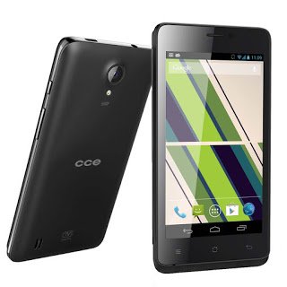

SO. IN ROMS
INICIO
FIRMWARES
OUTROS
SOBRE
CONTATO
Seção Hard Reset Veja como remover aquele padrão esquecido em alguns dos Dispositivos da Fabricante CCE
Outros
|
Hard_reset
|
CCE
Para agilizar pressione a tecla
F3
e ensira o modelo.
VOLTAR
Hard Reset para o CCE SC452 TV

Remoção do bloqueio de tela do Motion Plus